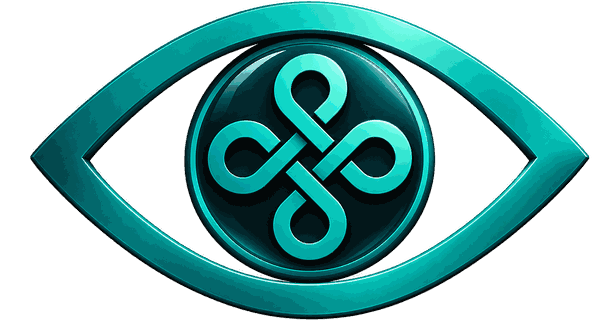
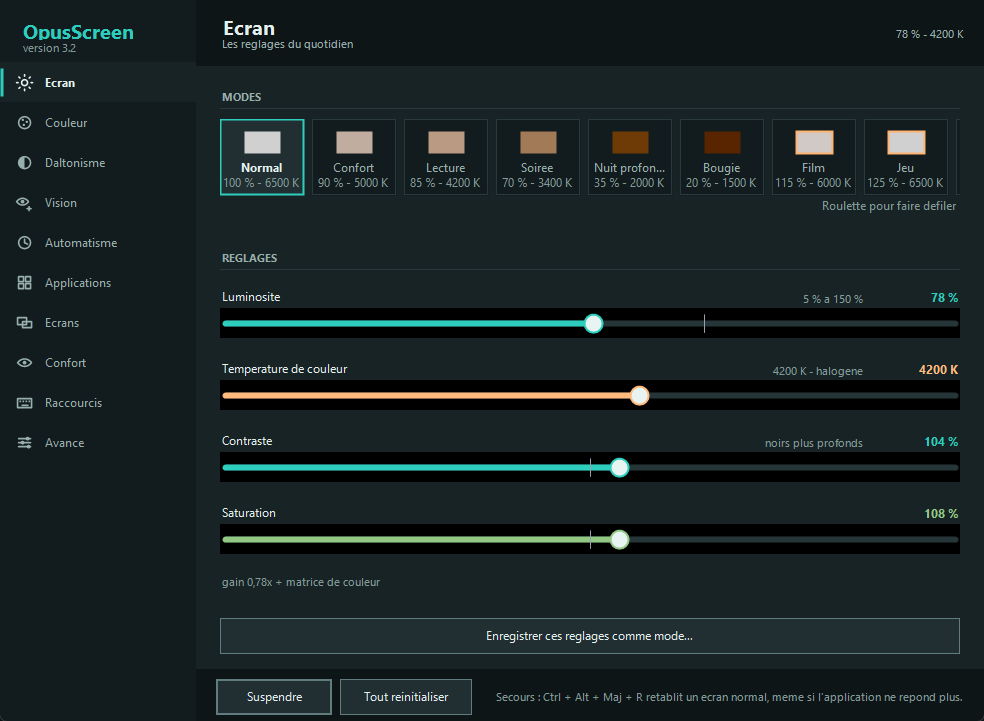
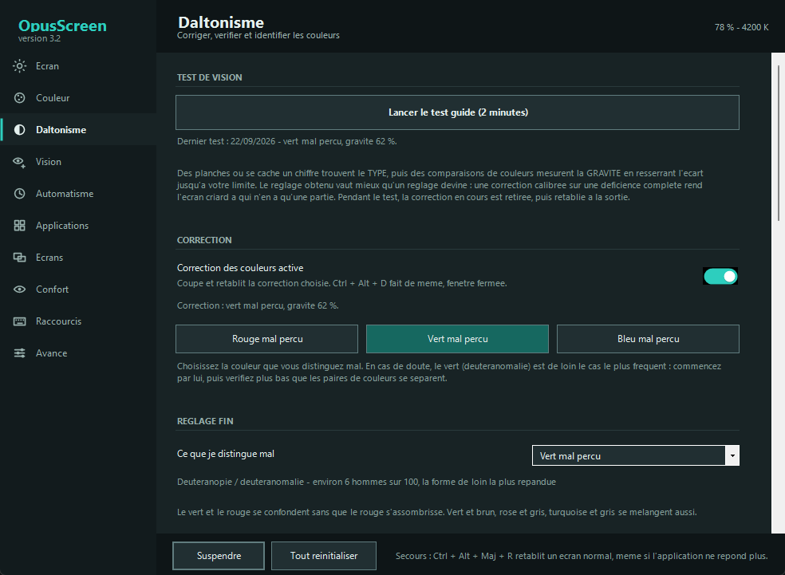
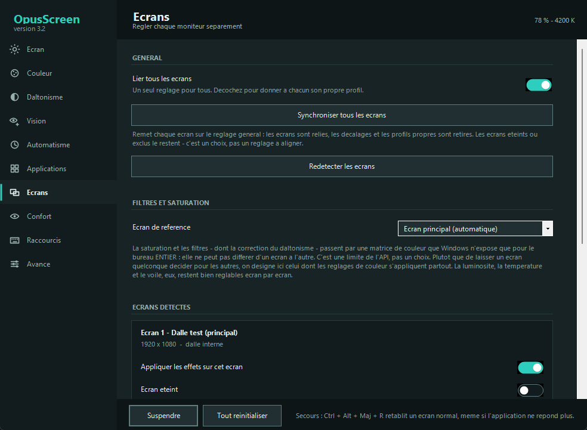
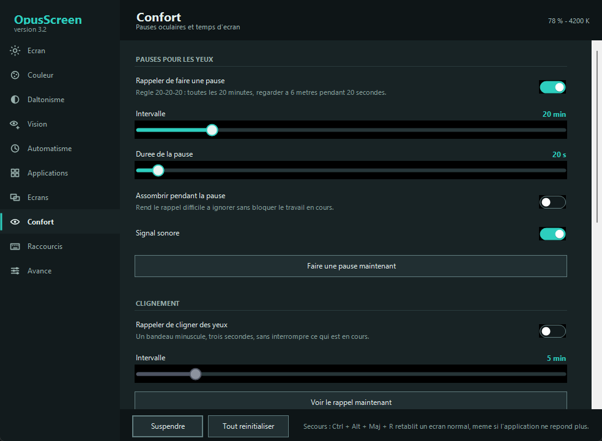
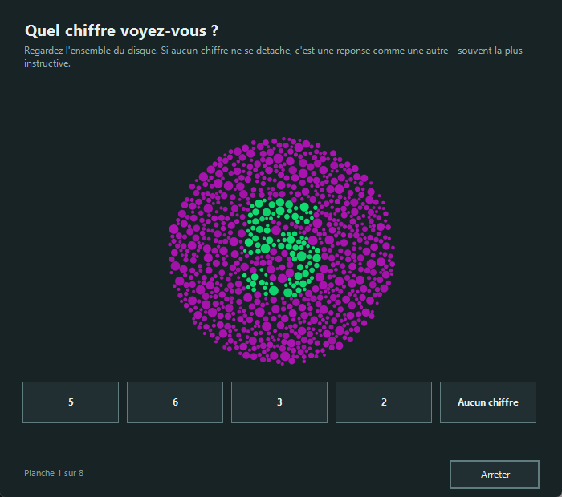
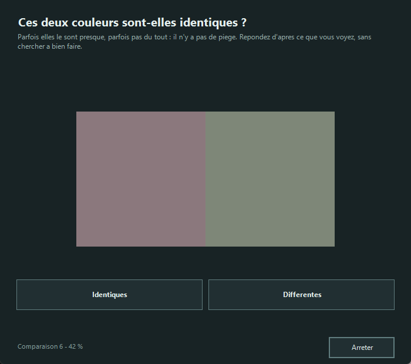
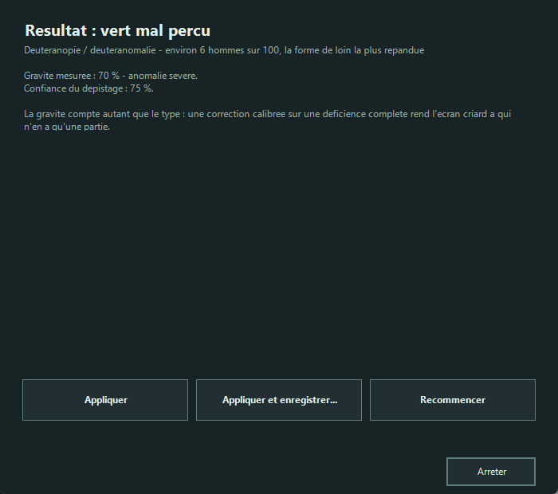
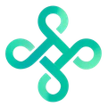

Your screen goes down to 5 %, and up to 150 %.
Colour temperature to the kelvin, brightness far beyond what Windows allows, and a colour-blindness correction that is measured rather than guessed. Free, open source, no account, and not a single network call.
Version 3.2 · one file · Windows 7 to 11
- Nothing to install
- No account
- No network connection
- AGPL v3 licence




Four stages, one slider
Windows offers a single slider, and only on displays that accept it. An image actually passes through four stages before it reaches the eye, and each one can be set separately. That is what makes it possible to go this low and this high.
Try it on this mock-up
The two sliders lay over the screenshot the same veil the application lays over a display, using the temperature formula taken from the code. Here the effect stops at the frame; on your machine it covers the screen.
What happens underneath
Backlight. The real light of the panel, through WMI on a laptop or DDC/CI on an external monitor. When the display answers, this is the best stage: less light emitted, not merely less light shown.
Gamma ramp. The graphics card's colour table, rewritten channel by channel. This is where temperature, contrast and balance live — and the only stage that can multiply, and therefore exceed 100 %.
Colour matrix. Saturation and filters, including the colour-blindness correction.
Veil. A semi-transparent black window that receives no clicks. Below 35 % it takes over, where the gamma ramp would start crushing the blacks.
Useful range
From 5 % at night to 150 % in direct sunlight, and from 1200 K (candlelight) to 6500 K (daylight).
Two colours that blur into one, pushed apart until they separate
On the left, what a colour-blind person sees today. On the right, the same colours corrected, seen by that same vision. The hues are not picked for effect: they are built along the confusion axis using the application's own matrices, and the gap is measured in Delta E exactly as it does.
Today
With OpusScreen
How to read these numbers
Below 2.3 Delta E the eye no longer separates two colours; above it, it does. The correction invents no colour: it moves the difference into the channels that are still perceived. The simulation remains a published approximation — a starting point that the test refines.
The colour vision test, in two minutes
Picking « deuteranopia, severity 100 % » from a list means filing yourself into a box. A correction calibrated for a complete deficiency makes the screen garish for someone who only has part of one — and that is most people concerned.
The plates find the type
The colours are searched for by computation among hundreds of candidates: the digit must vanish for the targeted deficiency and stay obvious for the other two. Two plates readable by everyone catch random answers.

The measurement finds the severity
The gap between two colours narrows on every correct answer and widens on every mistake, converging on your limit. This is the staircase method from psychophysics, applied to all three axes.

The result applies itself
And saves under whatever name you choose, without ever touching your brightness: recalling « maps » changes colours only. If nothing comes out clearly, the test says so rather than inventing.

Read this before you start
This test is not a substitute for a medical examination. It calibrates a piece of software from what you see on this particular screen, whose brightness and colour profile affect the outcome. Telling a mild protanomaly from a mild deuteranomaly requires an anomaloscope, and the application says so whenever doubt remains.
What is guaranteed, and by which test
Software that touches light can make a screen unusable. These guardrails are not intentions: each one fails loudly if it is broken.
| No combination of settings drops below 5 % luminance | SafetyTest |
|---|---|
| The screen returns to normal after a crash | SafetyTest |
| The correction really does separate confusable pairs | MatrixTest |
| The guided test recovers a simulated eye's severity within 15 % | VisionTest |
| The wheel scrolls without changing the setting under the pointer | UiTest |
| Every hand-drawn control announces itself to screen readers | VisionTest |
| Three thousand random gestures break none of the nine invariants | MonkeyTest |
How this is checked
One command, tests\run-tests.cmd, which refuses to report success if a suite did not run: a test that does not execute gives false assurance.
Nothing leaves your machine
No server contacted, no account, no usage statistics. A firewall has nothing to block.
One file, and that is all. The settings fit in a text file you can read in Notepad. Deleting the executable is the uninstall.
Verifiable. Public code under the AGPL v3 licence, commented in French, compiled with a single command and no toolchain to install.
On first launch
Windows will show « Windows protected your PC »: choose More info, then Run anyway. The file is not signed with a commercial certificate, which rents for several hundred euros a year.
And also
Eleven pages, of which only one is used daily — and a first one that explains where the app puts itself. The screenshots on this page come out of the real window, retaken by a tool at every release.
Sunset
Temperature follows the hour and your location, computed offline. Or your own schedule, if you would rather decide.
Content adaptation
Brightness follows what is on screen: a white page stops dazzling, a dark video stops disappearing.
Per-application rules
A mode per foreground program, and the veil stepping aside as soon as a game goes full screen.
Magnifier and pointer
Full-screen magnification, a ring around the pointer, and a label naming the colour under it.
Fifteen shortcuts
All reconfigurable and active with the window closed: brightness, temperature, next mode, correction, pause.
Command line
OpusScreen.exe --brightness 60 --temp 3400 — enough to script your settings or trigger them from elsewhere.
Questions
Is it really free?
Yes, and open source: AGPL v3 licence. No paid tier, no reserved feature, no trial period.
Windows shows a warning when I launch it.
The file is not signed with a commercial certificate, which rents for several hundred euros a year. SmartScreen announces « Windows protected your PC »: choose More info, then Run anyway. The repository also compiles with a single command, if you would rather not trust a binary.
How is this different from f.lux or Night light?
Colour temperature is the common ground. Beyond that: brightness runs from 5 % to 150 %, each display is set separately, and the colour-blindness side — adjustable correction plus a measuring test — exists nowhere else for free.
Does it work on an external monitor?
Yes. Brightness, temperature and veil are set display by display. Saturation and filters apply to the whole desktop: that is a limit of the Windows interface, and the application names the reference display rather than hiding it.
Does the vision test replace an optometrist?
No, and it says so. It calibrates software; a diagnosis requires a clinical examination. If the test finds something unexpected, talk to a professional rather than to a program.
Where are the settings stored?
In %LOCALAPPDATA%\OpusScreen\settings.ini. A text file, backed up by copying it and exported from the Advanced tab.
Which version of Windows do I need?
Windows 7 to 11. The application relies on .NET Framework 4, present everywhere since: nothing to install.

OpusScreen is built by Opus Belli
Opus Belli cuts out the manual paperwork that costs small companies hundreds of hours a year, from Rennes in France. OpusScreen comes off the same workbench and follows the same rule: the tool does its job on your machine, with no account and nothing sent anywhere.
One file. Two minutes. A screen that leaves you alone.
Put the executable wherever you like and double-click it. No installer, no account, no connection.
Version 3.2 · for Windows